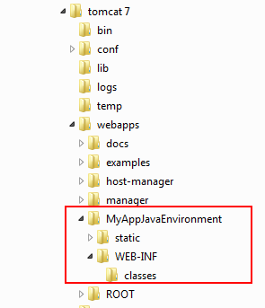

In a Java web KB, GeneXus configures the web application properties such as "Servlet Directory" or "Static content directory seen from client." To do so, GeneXus determines the latest version of Tomcat installed (by searching in the Windows Registry) and uses those values.
Installing only one Tomcat in the machine, and installing it with the setup from the Apache Tomcat page to avoid manually configuring the Tomcat is recommended.
If you want to use a different location, for example, a previous version of Tomcat or a Tomcat that was installed with a third-party installer, that does not write the data in the Windows registry (like XAMPP), and some files have to be manually copied.
The image below shows the application structure in Tomcat when trying to use manual configuration.

Now, let’s see the files that need to be added to the MyAppJavaEnvironment application.
- In the MyAppJavaEnvironment folder, create a folder called META-INF and add the context.xml file saved in the web folder of the model.
- In the folder MyAppJavaEnvironment, copy the files GXDIB32.DLL, printingappletsigned.jar, and rbuildj.dll that are saved in the web folder of the model.
- In the folder WEB-INF, copy the file web6.xml when using Tomcat 6 or web7.xml when using Tomcat 7; next, rename it to web.xml.
- Create a folder called lib in MyAppJavaEnvironment/WEB-INF and add the files gxclassR.jar, iText.jar, iTextAsian.jar, lucene-core-2.2.0.jar, lucene-highlighter-2.2.0.jar, lucene-spellchecker-2.2.0.jar, poi.jar, Tidy.jar, tm-extractors-0.4.jar, and the database driver. All files can be found in the web folder of the model, except for the file gxclassR.jar. Instead, the file gxclassR.zip is displayed and its extension has to be changed to jar.
- From GeneXus, in the classpath you need to change the reference to servlet-api.jar and add the corresponding one.
- In the MyAppJavaEnvironment folder, create a folder called “META-INF” and add the context.xml file saved in the web folder of the model.
- In the folder MyAppJavaEnvironment, copy the files GXDIB32.DLL, printingappletsigned.jar, and rbuildj.dll that are saved in the web folder of the model.
- In the folder WEB-INF, copy the file web6.xml when using Tomcat 6 or web7.xml when using Tomcat 7; next, rename it to web.xml.
- Create a folder called “lib” in MyAppJavaEnvironment/WEB-INF and add the files gxclassR.jar, iText.jar, iTextAsian.jar, lucene-core-2.2.0.jar, lucene-highlighter-2.2.0.jar, lucene-spellchecker-2.2.0.jar, poi.jar, Tidy.jar, tm-extractors-0.4.jar, agxpgetlicinfo.jar, asm-3.1.jar, jersey-core-1.4.jar, jersey-json-1.4.jar, jersey-server-1.4.jar, and the database driver. All files can be found in the web folder of the model, except for the file gxclassR.jar. Instead, the file gxclassR.zip is displayed and its extension has to be changed to jar.
- Create a folder called "gxmetadata" in MyAppJavaEnvironment, copy the files gx_entity_list.json and gxversion.json that are saved in the folder web/gxmetadata of the model, and create another folder called "images" in gxmetadata.
- Create a folder called "Metadata" in MyAppJavaEnvironment, and inside it copy the folder "TableAccess" that is saved in the folder web/Metadata of the model.
- When using Tomcat 7, copy to its lib folder the file GXScanner.jar that is saved in the web folder of the model. GXScanner is for prototyping only and makes webapp reloads faster. It is referenced in the context.xml of the META-INF directory and is not required in production.
- Below the MyAppJavaEnvironment folder, create a folder called “META-INF” and add the context.xml file saved in the web folder of the model.
- In the folder MyAppJavaEnvironment, copy the files GXDIB32.DLL, printingappletsigned.jar, and rbuildj.dll that are saved in the web folder of the model.
- In the WEB-INF folder, copy the file web.xml generated in the web environment.
- Create a folder called “lib” in MyAppJavaEnvironment/WEB-INF and add the files commons-fileupload-1.3.1.jar, gxclassR.jar, iText.jar, iTextAsian.jar, lucene-core-2.2.0.jar, lucene-highlighter-2.2.0.jar, lucene-spellchecker-2.2.0.jar, poi.jar, Tidy.jar, tm-extractors-0.4.jar, asm-3.1.jar, jersey-core-1.4.jar, jersey-json-1.4.jar, jersey-server-1.4.jar, xercesImpl.jar and xml-apis-1.4.01, and the database driver. All files can be found in the web folder of the model, except for the file gxclassR.jar. Instead, the file gxclassR.zip is displayed and its extension has to be changed to jar.
- Create a folder called "gxmetadata" in MyAppJavaEnvironment, copy the files gx_entity_list.json and gxversion.json that are saved in the folder web/gxmetadata of the model, and create another folder called "images" in gxmetadata.
- Create a folder called "Metadata" in MyAppJavaEnvironment, and inside it copy the "TableAccess" folder that is saved in the folder web/Metadata of the model (in any transaction).
- When using Tomcat 7, copy to its lib folder the file GXScanner.jar that is saved in the web folder of the model. GXScanner is for prototyping only and makes webapp reloads faster. It is referenced in the context.xml of the META-INF directory and is not required in production.
After completing these steps, the application should work correctly.
Use the Build Events feature; more specifically, define a Post-build event. In this event call via command line a batch program that creates the required structure in Tomcat, with the required files to execute the webapp and taking into account the properties you set in GeneXus.
To do so, you can use the createwebapplication.bat file that is distributed with GeneXus. You'll find it under <GeneXus Installation directory>\gxjava. (eg.: C:\Program Files (x86)\GeneXus\GeneXus16U3\gxjava\createwebapplication.bat).
In addition, you can configure the option 'Run the post-build event' to 'On successful build', so that the .bat is only executed if the build finishes successfully.
The .bat expects the following parameters:
- Path of Tomcat's installation
- Name of the webapp
- Tomcat version
- If debug is enabled (true or false) to replace gxclassr by gxclassd (This is meaningless for GeneXus 16 Upgrade 4 or higher. ref.: Java standard classes moved to GitHub - Benefits and Compatibility aspects)
- Use Native Soap support in Java (true or false)
- TransferSDApi (true or false) if you have Smart Devices Objects
- LayoutMetadataDirectory to indicate where the files of Customizable Layout property should be copied. If there are no dynamic reports, the value should be “LayoutMetadata” (default value). Ref End-user customizable reports
- Java version (6, 7, 8, 9 , 10, 11, 12, etc.)
- useModulesInJDK (true or false). If JDK version is > 8, then it must be 'true'
Suppose you have the following installation:
- Servlet directory = e:\Tomcat\webapps\testapp\WEB-INF\classes
- Static content directory seen from client = e:\Tomcat\webapps\testapp\static
- Tomcat 9, Java 8
Then the command to add to the Post-Build Events would be:
E:\GeneXus\GeneXus16U3\gxjava\createwebapplication.bat "e:\Tomcat" "testapp" "9.0" "false" "false" "false" "LayoutMetadata" "8" "false"
With this, every time you select Build, GeneXus will execute this bat and copy the files to the corresponding folders.
Note: While copying, you may get errors you can ignore.
eg.:
error: File not found - GXCF_*.config
error: File not found - *.rpt
%0d